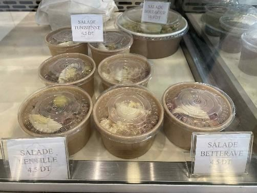
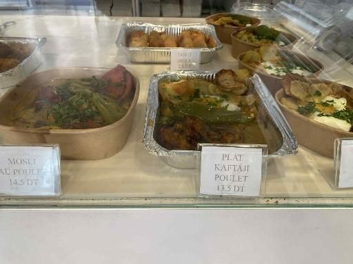
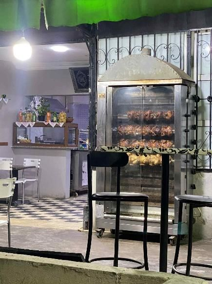
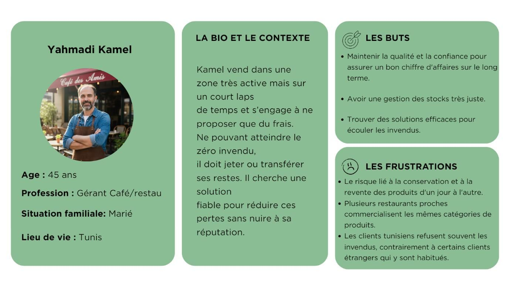
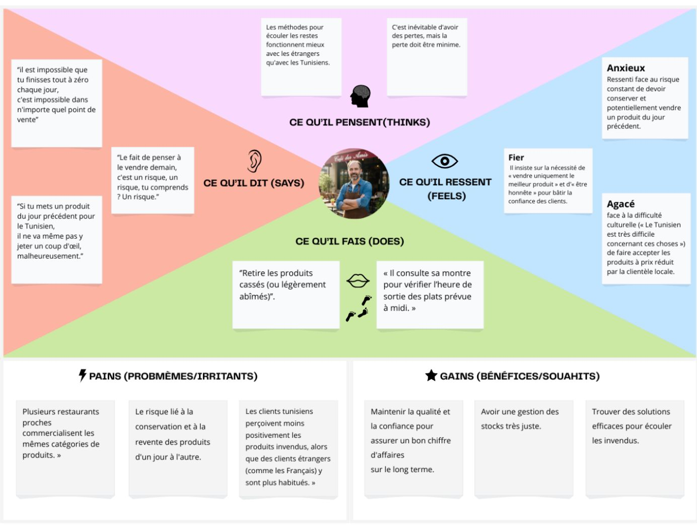
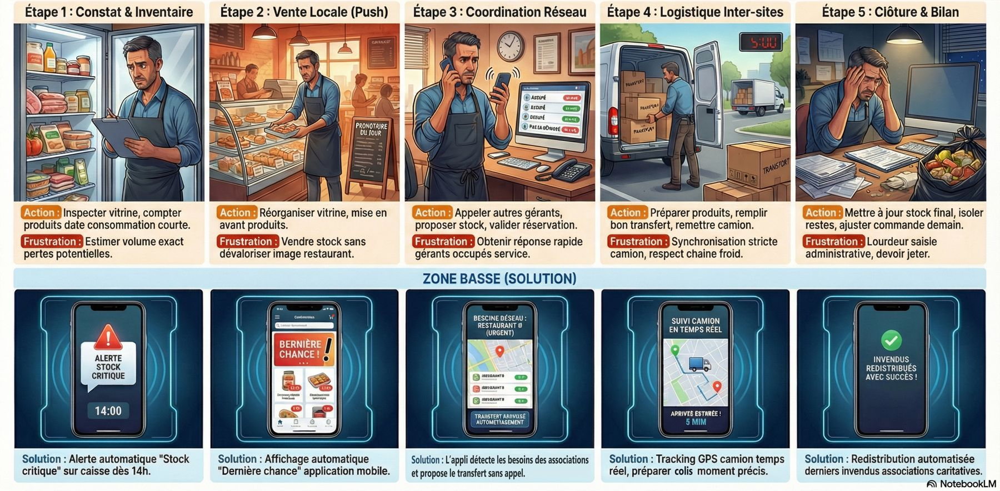
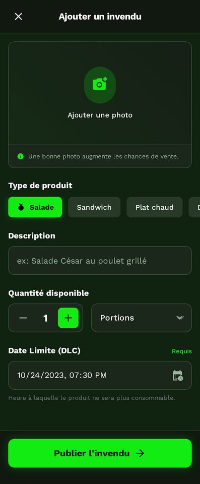
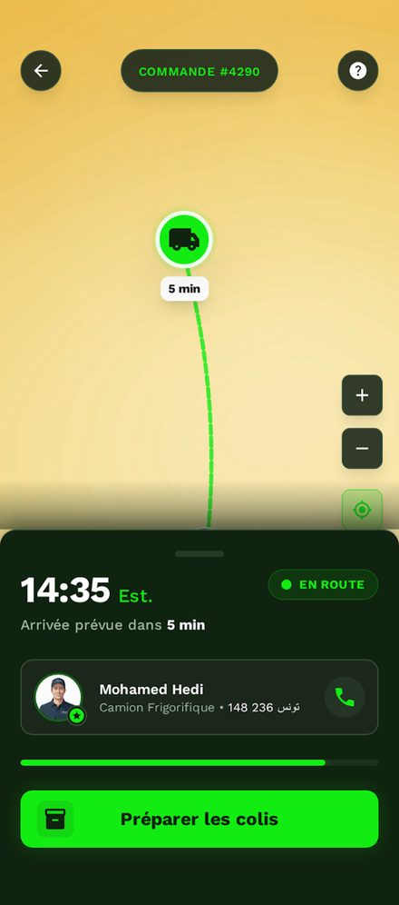

EcoResto
Une application qui aide les cafés et restaurants tunisiens à valoriser leurs invendus et à les redistribuer aux associations.
- Contexte
- Atelier de créativité, initiation au design UX
- Rôle
- UX/UI Designer, projet individuel
- Année
- 2025/2026 · ESSTED
- Encadrement
- M. Oueslati Nadhem
Des invendus qui finissent à la poubelle
Chaque soir, cafés et restaurants se retrouvent avec des plats et pâtisseries invendus. Faute d'outil et d'organisation, une grande partie est jetée alors que des associations à quelques kilomètres cherchent de quoi nourrir des centaines de personnes. Le projet répond à l'ODD 12 (consommation et production responsables), en lien avec l'ODD 2 (faim « zéro ») et l'ODD 17 (partenariats).
Comprendre le terrain avant de dessiner
Benchmark
Too Good To Go et Flashfood : efficaces, mais pensées pour la vente, peu solidaires et difficiles à transposer au contexte tunisien.
Observation
Lac 1, Khaznadar et La Mornaguia, octobre 2025, à midi et à 21h. Observation passive et participante.
3 entretiens
Un gérant de café-restaurant et deux membres d'associations (Jmaity, Association Universelle).
Sondage
20 répondants via Google Forms, diffusé dans 3 groupes Facebook pendant une semaine.



Photos prises sur le terrain, à 13h et à 21h.
Les insights clés
Il est impossible d'écouler l'intégralité du stock dans un commerce alimentaire.
Kamel Yahmadi, gérant de café-restaurant à Tunis
Sur le terrain, les restes ne sont pas redistribués de façon systématique, aucune solution ne permet de le faire rapidement, et personne ne prévient les associations locales des excédents. Du côté associatif, la demande est immense : une seule association distribue environ 500 repas par jour.
Kamel, 45 ans, gérant de café-restaurant
Son besoin : trouver des solutions efficaces pour écouler ses invendus sans nuire à la réputation de son établissement. Sa frustration : le risque lié à la conservation et à la revente des produits d'un jour à l'autre.

Persona

Carte d'empathie

Parcours utilisateur : 5 étapes de la journée du gérant (en haut) et la réponse d'EcoResto à chacune (en bas).
La gestion du gaspillage est freinée par le manque de flexibilité, l'absence d'outils structurants et le déficit de solutions pour valoriser les invendus.
Problème réel identifié
D'un processus manuel à un système intelligent
EcoResto digitalise la gestion et la redistribution des surplus alimentaires. Chaque fonctionnalité répond à une étape douloureuse du parcours actuel.
Alerte stock critique
Une notification dès 14h pour ne plus oublier l'inventaire.
« Dernière chance »
Des promotions affichées automatiquement pour vendre sur place.
Réseau inter-boutiques
L'app détecte les besoins des autres points de vente et propose les transferts.
Suivi en temps réel
Le camion est suivi par GPS : les colis sont prêts à son arrivée.
Don facilité
Les derniers invendus sont proposés aux associations en un geste.
Le parcours idéal, en 7 écrans


Faites défiler pour voir tous les écrans →
Démonstration dynamique
Le prototype interactif reprend le parcours idéal : de l'ajout d'un invendu à la clôture de la journée, en passant par l'alerte aux associations et le suivi de la collecte.